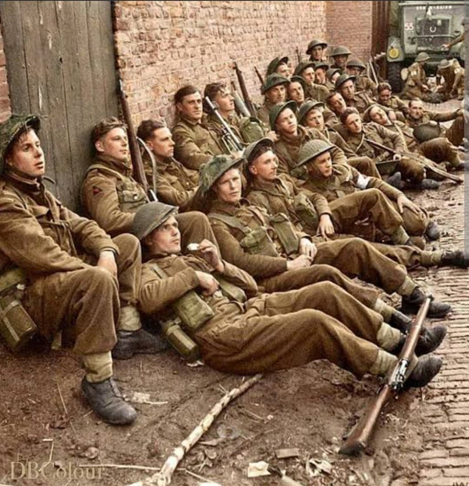
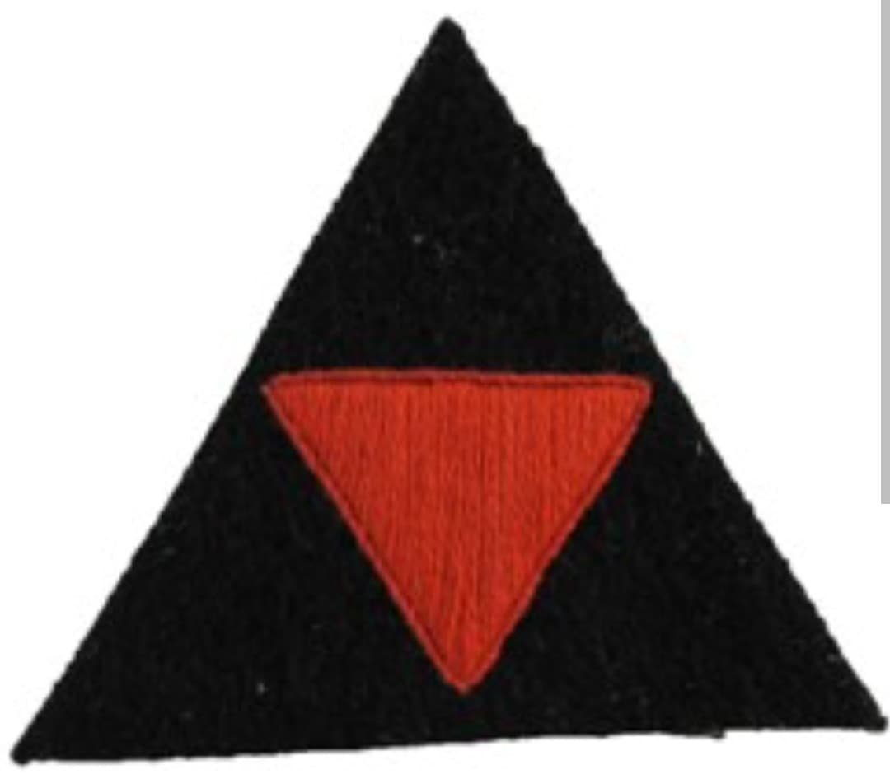
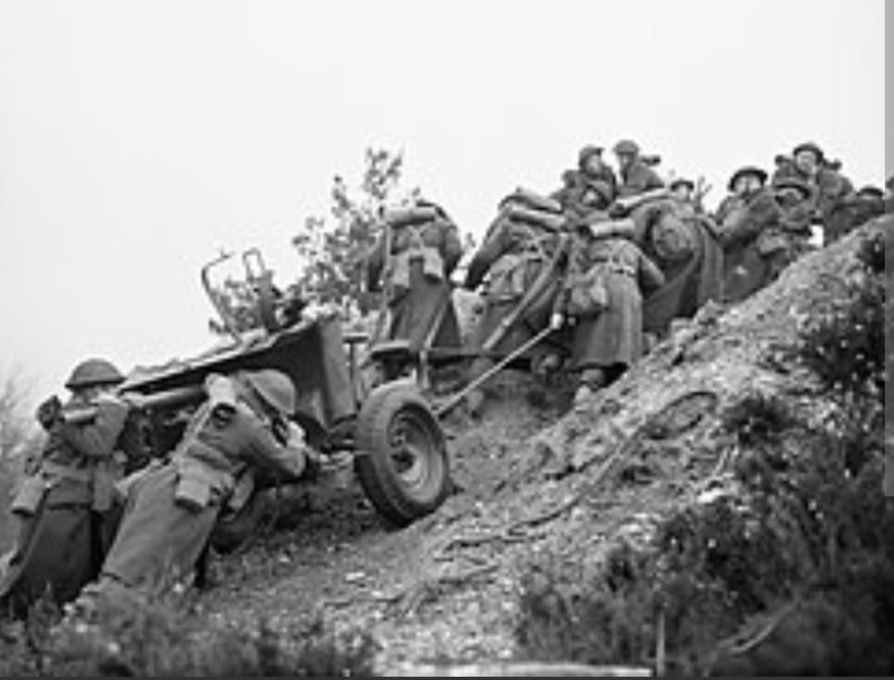

La pointe de l'épée britannique : de l'évacuation de Dunkerque à l'assaut amphibie de Sword Beach

La 3rd Infantry Division (3e division d'infanterie britannique) est l'une des formations régulières les plus anciennes, respectées et décorées de la British Army durant la Seconde Guerre mondiale. Ayant combattu sur les grands théâtres du conflit, elle est mondialement entrée dans l'histoire pour avoir mené l'assaut amphibie sur Sword Beach lors du Débarquement de Normandie le 6 juin 1944.
Commandée au moment du D-Day par le major général **Tom Rennie**, la division s'est distinguée par sa solidité tactique, sa discipline et son efficacité redoutable au combat.
Déployée au début de la guerre en France au sein du Corps expéditionnaire britannique (BEF), elle participe aux combats de la campagne de 1940 avant d'être évacuée de justesse des plages de **Dunkerque** lors de l'opération Dynamo.
Son insigne d'épaule distinctif représente un blason symbolique de l'infanterie régulière de ligne britannique.

Le 6 juin 1944, la 3rd Infantry Division a pour mission de s'emparer de la plage de **Sword Beach** à Ouistreham et de progresser vers l'intérieur des terres pour capturer la ville stratégique de Caen, en coordination étroite avec les forces aéroportées britanniques.
Malgré une forte résistance ennemie, les fantassins britanniques percent la plage dans la matinée et sécurisent le flanc oriental de la tête de pont alliée.

Après les âpres combats de l'été pour la libération de Caen, la division participe à l'avancée à travers la Belgique et les Pays-Bas. Au printemps 1945, elle franchit le Rhin lors de l'opération Plunder et s'enfonce au nord de l'Allemagne jusqu'à la capitulation en mai 1945.
Page du Musée HOP WW2 – Section Unités & Divisions